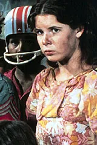

The genetics
The episode's disaster comes from a scientific project to prolong life. Three centuries earlier the planet's scientists carried out a life-extension experiment that slowed ageing in children, but every person who reached puberty fell victim to a fatal disease that wiped out the adult population; the French Wikipedia reads the episode as a warning about genetic manipulation and the quest for immortality, while Memory Alpha speaks of a miscalculation. The original scientists are long dead and appear only through their records. Medicine provides the remedy: McCoy reconstructs their work, isolates the agent and develops a vaccine, which he tests on himself, a classic act of heroic self-experimentation. Real ageing cannot be slowed to this degree, and the episode never explains the biology, but its theme, a well-meant attempt to defeat ageing that ends in catastrophe, is a recurring one in science fiction.
How genetics is portrayed
- Overall portrayal of genetics
- negative The episode is about a well-meant attempt to defeat ageing that annihilated a civilisation; McCoy's heroic medicine is the rescue, not the subject.
- Outcome of the genetic intervention
- negative The life-extension experiment killed the entire adult population and left the children trapped in centuries of childhood; McCoy's vaccine only repairs the damage at the end.
- The planet's scientists
- ambivalent Aim: benevolent (positive). Three centuries earlier they ran a life-extension experiment to prolong life; the episode treats their miscalculation, which killed every adult, as a cautionary tale rather than villainy.
- Dr. Leonard McCoy
- hero Aim: benevolent (positive). McCoy reconstructs the old research, develops a vaccine against the experiment's disease and tests it on himself, saving the landing party and the children.
The story
Answering a distress call, the Enterprise finds a planet identical to Earth, with a 1960s-style city in ruins. The landing party is attacked by a deranged, disfigured man who dies of a seizure, and meets Miri, a girl who explains that the "grups" went mad and died, leaving only children, the "Onlies". Spock finds records of a life-extension experiment three hundred years old: it slowed ageing to one month per century, but at puberty it triggers a disease that brings violent madness and death within days. The children are centuries old, and the whole landing party except Spock catches the disease. McCoy works on a vaccine, but the children steal the communicators he needs to check the dose with the ship's computer, and the jealous Miri helps them kidnap Yeoman Rand. Kirk wins the children over, McCoy tests the vaccine on himself and it works, and the Enterprise leaves medical staff and asks for teachers to help the children.